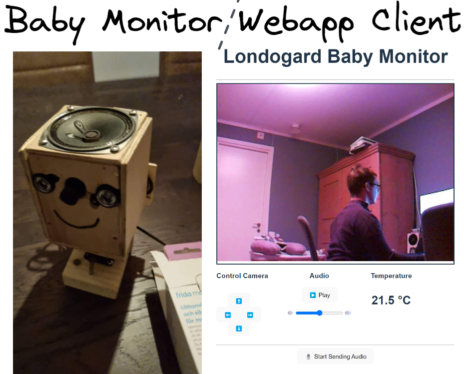
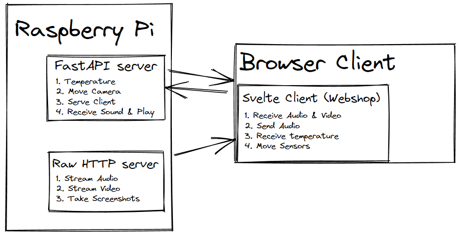
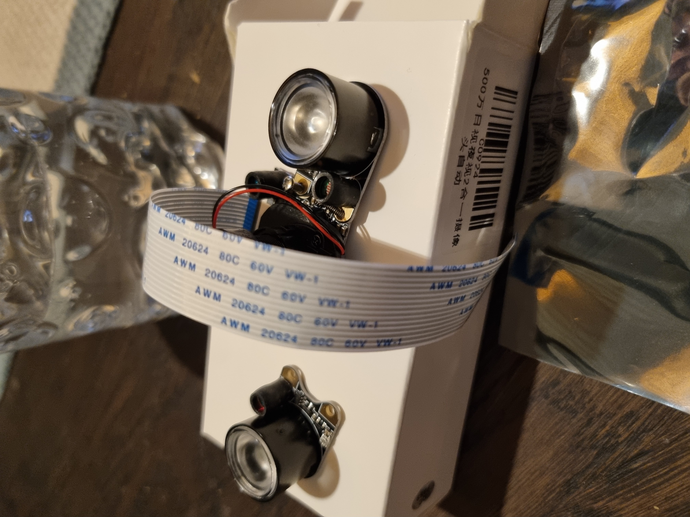
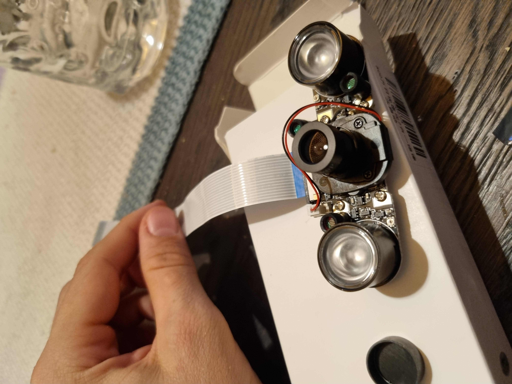

Back in action and finalizing the baby monitor!üë∂
TL;DR Built a baby monitor that included the following features:
- Bidirectional Audio & Unidirectional Video (Night & Day Vision!)
- Temperature Sensor
- Motor (Servo) to move left/right & up/down
The project was born the day I met an old friend and saw his expensive baby monitor that he had been gifted, I needed to match it! ü§ì
Result:  I‚Äôm very happy about the results, my wife asked me to draw a smile on the creepy monitor, hence the smile! üòú Video of it running live can be found at the end!
Implementation Details
To implement and build this camera I had to combine both hardware and software into a package.
Hardware Details
Most of my hardware was bought through Aliexpress, with few parts being from an old Pi.
| Hardware | Functionality | Software Required/Used | Notes |
|---|---|---|---|
| Raspberry Pi 3B+ | The Brain which powers everything | Raspberry Pi OS Lite (Bullseye) | This OS uses the new Open Source camera-stack, Libcamera! |
| DS18B20 | Temperature Sensor | W1ThermSensor | I wish I found this earlier, at first I parsed the raw file myself. And it was hard to find set-up instructions! |
| Nylon FPV Servo | Servo Motor (moving the camera) | gpiozero | A brilliant library. It has to be noted that this servo works through Pulse Width Modulation (PWM) and to make the servos quite we need to set servo.value=None after setting it to a value. Complicates the configuration a little. |
| Raspberry Pi 4 Camera 5MP | Camera with IR-cut (IR on/off via hardware automatically) | libcamera / picamera2 | Very simple to use over all. Tricky that you needed to focus it yourself, I thought it was broken first! üòÜ |
| Microphone from Google AIY v1 | Record sound | This is tricky because of the HAT, requires custom installation. | |
| Speaker from Google AIY v1 | Play sound | ||
| Pi HAT from Google AIY v1 | Combine sensors, microphone & speakers |
Software Stack
To make use of my beautiful hardware I need software! Keeping things simple (KISS) I decided to use a Python backend and show it through a simple webapp. That way I can view the baby monitor from my PC, Smartphone & anything that has a browser really.
The end result became as follows üëá 
Webapp Client
Over all I really enjoyed playing around with Svelte. It felt very straight-forward and simple, although there’s less community and libraries compared to React. All in all I’d give it one up compared to React because of simplicity, but I’m just a ordinary Backend Dev / Data Engineer+Scientist.
Server/Backend
FastAPI as always is a blessing to work with! The auto-generated swagger page, superb type integration and much more makes me feel right at home as someone who‚Äôs really a Scala-dev.üòâ FastAPI has its drawbacks though, the streaming component definitely showed some rather large overhead. I had to fall back to raw http to have good performance üò∞
The end result became two backends, but I tried to keep the responsibilities clear and it worked out fine!
End Result
And a video to show how real-time it is!
I’m very happy about the results!
Images of the Building Process
And some images of when I built the monitor!
| What | Image |
|---|---|
| Building the Camera |  |
| Connecting the final piece of Camera |  |
| Building Temperature Sensor | |
| Connecting Temperature, Pi & Camera | |
| Manual Temperature Validation | |
| Testing the Servo | |
| Connecting all in a paper box | |
| First Wooden Baby Monitor Prototype | |
| Final Wooden Baby Monitor |
A sad ending
The servo motors showed to be too weak which interestingly means they’re too strong. As they try to move the housing it works slowly until it move everything at once which creates a force stronger than the pad that the monitor was standing on.
The end result was‚Ķ Sweet release of machine breakage üò¢
That‚Äôs it for this time! Now I look forward to become a father! ü뮂Äçüë©‚Äçüëß‚Äçüë¶ ~Hampus Lond√∂g√•rd